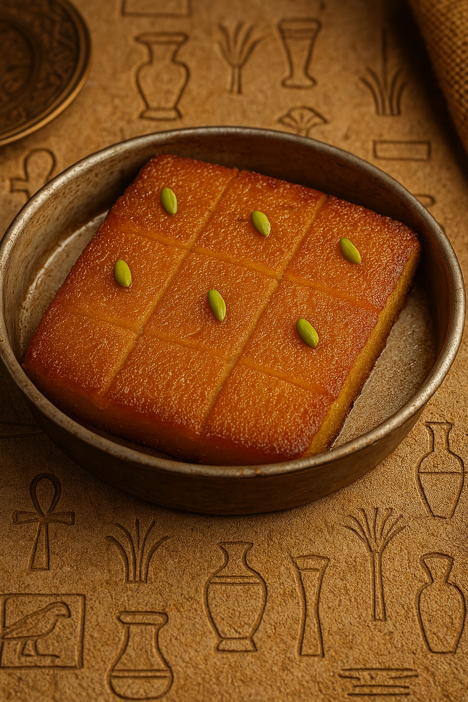

Sweet Semolina Cake
Basbousa is a soft and syrupy semolina cake, flavored with coconut and often topped with almonds. A classic Egyptian dessert that's moist, sweet, and perfect with tea.
Ingredients:
- 1 cup semolina
- 1 cup sugar
- 1 cup plain yogurt
- 1/2 cup shredded coconut
- 1/4 cup melted butter
- 1 tsp baking powder
- Whole almonds for topping
- For syrup: 1 cup sugar, 1/2 cup water, lemon juice, rose water
Instructions:
- Mix semolina, sugar, yogurt, coconut, butter, and baking powder until combined.
- Pour into a greased baking dish, flatten, and add almonds on top.
- Bake at 180°C (350°F) for 30–35 minutes until golden.
- Meanwhile, prepare syrup: boil sugar and water, add lemon juice, simmer 10 minutes, then add rose water.
- Pour syrup over hot basbousa. Let it absorb before serving.